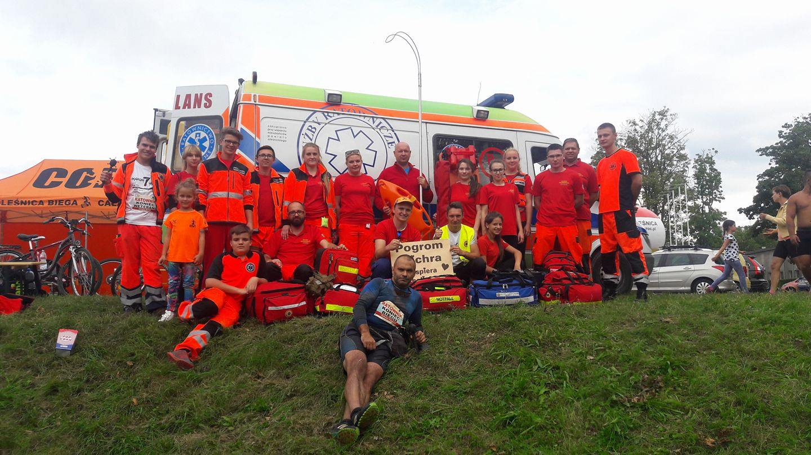

-
Nasze Działania
-

Ratownictwo
Służby Ratownicze is truly passionate about this issue, as it is one that impacts so many people all over the world. We hold this issue close to our hearts, working day in and day out to find ways to improve the cause of workers. Służby Ratownicze aims to maintain balance within the labor system, and will keep pushing until the right deal is reached.
-
Kursy i Szkolenia
Prowadzimy kursy i szkolenia z zakresu pierwszej pomocy wg standardów IFACC Polska (International First Aid Cetrtification Center) oraz EFR (Emergency First Response), a także kursy specjalistyczne.
Oferujemy szkolenia pierwszej pomocy dla dzieci w przedszkolach, szkołach, firmach, zakładach pracy. Kursy prowadzone są przez licencjonowanych instruktorów i trenerów według najnowszych wytycznych Europejskiej Rady Resuscytacji z 2010 (ERC 2010) oraz zgodnie z wymogami nowelizacji kodeksu prac, która weszła w życie 18 stycznia 2009 roku.
Wszystkie nasze szkolenia są dostosowane do wieku uczestników. Podczas szkoleń wykorzystujemy najnowszy sprzęt do prowadzenia wszelkiego rodzaju ćwiczeń, treningów i symulacji w zakresie BLS (Podstawowe Zabiegi Resuscytacyjne) oraz BLS-AED (Podstawowe Zabiegi Resuscytacyjne z wykorzystaniem Automatycznego Defibrylatora Zewnętrznego).
Uczestnicy szkoleń otrzymują stosowne certyfikaty potwierdzające zdobytą wiedzę i umiejętności.
Celem naszych szkoleń, niezależnie od wieku uczestników, jest zdobycie podstawowej wiedzy i umiejętności praktycznych odpowiedniego zachowania w najczęściej spotykanych stanach zagrożenia zdrowia i życia. Przekazywanie wiedzy i danych umiejętności jest przeprowadzany w sposób zrozumiały dla wszystkich osób, w tym dla osób, które nie mają na co dzień styczności z medycyną.
Szkolenia przez nas prowadzone są zarówno w postaci cyklicznej, jak i jednorazowych, kilkugodzinnych szkoleń. Formy cyklicznych zajęć najlepiej sprawdzają się w przedszkolach i szkołach, gdzie semestralne lub całoroczne przygotowanie daje najlepsze i trwałe efekty, skutkujące właściwym utrwaleniem wiedzy teoretycznej i najkorzystniejszym doskonaleniem wiedzy praktycznej.
Podczas wszystkich szkoleń uczymy odpowiedniej reakcji w stanach zagrożenia zdrowia lub życia oraz odpowiedniego postępowania w celu zminimalizowania następstw sytuacji zagrażających zdrowiu i życiu.
Stosujemy najbardziej skuteczną metodę nauczania "STEP BY STEP" polegającą na tym, że instruktor prowadzący zajęcia nie przechodzi do kolejnej partii materiału do czasu, gdy wszyscy uczestnicy szkolenia nie opanują danej partii materiału w całości.
Zajęcia prowadzimy w grupach 12-24 osobowych, co gwarantuje jak najlepsze zapoznanie się z tematami szkolenia.
Zobacz aktualny kalendarz szkoleń.
Masz pytania? Skontaktuj się z nami!
-
Zabezpieczanie Imprez
Nasze Stowarzyszenie posiada bogate doświadczenie w zabezpieczeniach medycznych wszelkiego rodzaju imprez sportowych, koncertów, pikników rodzinnych itp.
Jesteśmy w stanie udzielić profesjonalnej pomocy medycznej uczestnikom imprezy na miejscu, a także w razie konieczności przygotować osoby do transportu do specjalistycznych placówek medycznych.
Od wielu lat współpracujemy z firmami, organizacjami i instytucjami oferując usługę zabezpieczenia medycznego najwyższej jakości. Naszym priorytetem jest bezpieczeństwo każdego uczestnika imprezy. W sytuacjach zagrożenia reagujemy natychmiast.
Nasza usługa jest zgodna z Rozporządzeniem Ministra Zdrowia z dn. 6 lutego 2012 roku w zakresie wymagań dotyczących zabezpieczenia pod względem medycznym imprez masowych.
Zgodnie z ustawą "O bezpieczeństwie imprez masowych" (Dz.U.Nr 106 poz. 680 z 1998 r. z późniejszymi zmianami) organizator każdej imprezy gdzie szacunkowa liczba uczestników wynosi powyżej:
- 1000 osób - dla imprez na wolnym powietrzu
- 300 osób - dla imprez w obiektach zamkniętych
ZADZWOŃ! DOWIESZ SIĘ WIĘCEJ!
PRZEDSTAWIMY I DOPASUJEMY
NAJLEPSZĄ OFERTĘ DO TWOICH POTRZEB.
PUNKT MEDYCZNY
Jest to ambulatorium odpowiednio przygotowane do pracy w warunkach polowych, pozwalające na fachową medyczną opiekę nad osobami poszkodowanymi, w trakcie trwania imprezy. Jego wyposażenie jest zgodnie z Rozporządzeniem Ministra z dnia 6 lutego 2012 r. w sprawie minimalnych wymagań dotyczących zabezpieczenia pod względem medycznym imprezy masowej.
PIESZY PATROL RATOWNICZY
Patrol ratowniczy składa się co najmniej z dwóch ratowników i posiada wyposażenie określone w Rozporządzeniu Ministra z dnia 6 lutego 2012 r. w sprawie minimalnych wymagań dotyczących zabezpieczenia pod względem medycznym imprezy masowej.
KONTAKT 24H
ZAPRASZAMY
-
Transport Sanitarny
W ramach działalności naszego Stowarzyszenia oferujemy profesjonalny transport medyczny klientom indywidualnym oraz instytucjom.
Posiadamy w pełni wyposażoną karetkę, która jest przystosowane do transportu chorych w wygodny i bezpieczny sposób.
Zespół w karetce tworzy wykwalifikowany personel, składający się z trzech ratowników.
Zapewniamy usługę transportu do:
- szpitala/przychodni
- domu opieki
- sanatorium
- na konsultacje lekarskie
- ze szpitala do szpitala
- na lotnisko
- imprezy okolicznościowe itp.
Nasze usługi wykonujemy na terenie Oleśnicy, Wrocławia oraz całego Dolnego Śląska.
- Dłuższe transporty wymagają odpowiednio wcześniejszego kontaktu.
- Istnieje możliwość zabrania bagażu wraz z pacjentem.
- Jesteśmy wyposażeni w specjalny sprzęt, przystosowany do pokonywania przeszkód. Wnoszenie po schodach jest w zakresie usługi.
- Transportujemy osoby starsze zapewniając łagodne przekładanie na nosze lub na fotel transportowy.
W skład zespołu karetki sanitarnej wchodzą:
- Ratownik kierowca + Dwóch ratowników lub
- Ratownik kierowca, Ratownik medyczny, Ratownik*
*W razie konieczności możliwa opieka lekarza
Ponadto:
- Fachowa pomoc w organizacji transportu medycznego
- Szybki czas realizacji zamówienia
- Możliwość wyceny usługi pod nr tel. +48 881 351 301 lub mailowo: sr@sluzbyratownicze.pl
- Kontakt 24h 365 dni w roku
- Wystawiamy Fakturę VAT
OFERTA:
Transport medyczny na terenie Oleśnicy w jedną stronę:
100 zł* (bez limitu kilometrów, możliwy powrót w tym samym dniu za 50 zł*)
Transport medyczny na terenie Oleśnicy w dwie strony z półgodzinnym oczekiwaniem:
100 zł* (0,5 godziny gratis, każde kolejne 30 min. 25 zł*)
Transport poza Oleśnicą:
90 zł* + 2,2 zł*/km
Transport poza Oleśnicą z lekarzem:
150 zł* + 2,5 zł*/km
*Wszystkie ceny brutto. Wnoszenie po schodach w ramach usługi.
Możliwość płatności przelewem lub gotówką u kierowcy po zrealizowaniu usługi.
BEZPIECZNIE - WYGODNIE - PROFESJONALNIE
Zapraszamy 24h/7
-
Pokazy Ratownictwa
Bardzo często w trakcie zabezpieczeń, a także na specjalne zamówienie organizujemy pokazy ratownictwa. Współpracujemy z Pogotowiem Ratunkowym, Strażą Pożarną, Policją i innymi organizacjami. Zapewaniamy wysoki poziom realizmu pokazu. Systematycznie uczymy publiczność przed każdym sezonem i polecamy ostrożność!